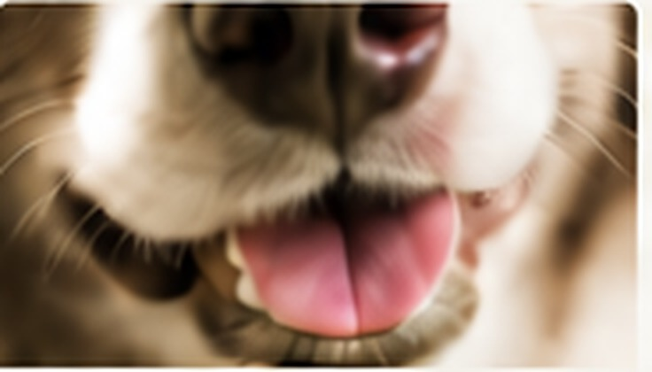
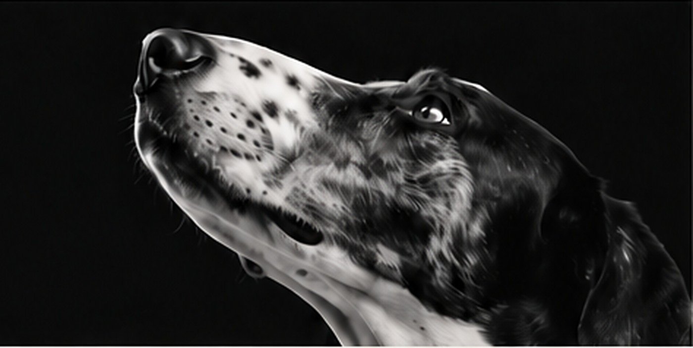

01 / INDEPENDENT
VOHC Accepted
Look for accepted products with a specific plaque or tartar claim. Learn about VOHC ↗
THE GOOD LIFE, FOR DOGS
Considered essentials for the dogs who make every day better.
SHOP THE EDIT →Every detail matters
Look beyond the label
Daily care made simpler
For the life you share

START WITH WHAT MATTERS
A daily ritual that fits your dog, not the other way around.
FIND THEIR ROUTINE →

Brands shown for inspiration — partnerships and availability are not yet confirmed.
THE KOJI DENTAL EDIT
Four ways to care for their smile. Start with what suits your dog.
SHOP BY NEED
OUR STANDARDS
Fewer bold claims. More considered choices. We look for clear ingredients, relevant evidence and products that suit real dogs.
OUR APPROACH →
THE ROUTINE FINDER
Tell us how your dog feels about toothbrushing. We'll suggest a simple place to begin.
CLEAR PROOF, NO CONFUSION
01 / INDEPENDENT
Look for accepted products with a specific plaque or tartar claim. Learn about VOHC ↗
02 / RESEARCH
We consider relevant published studies and whether their results apply to the specific product.
03 / PERSONAL CARE
Home routines can support oral hygiene, but don't replace veterinary exams or treatment.
THE SMILE REPORT
Plaque forms daily. Dog-safe toothpaste and regular, gentle brushing help reduce build-up over time.
It identifies individual dental products with recognised evidence for plaque or tartar control.
Build tolerance slowly with rewards and short sessions. Never force a painful mouth.
GOOD QUESTIONS
Brushing is generally the preferred home-care method. Some evidence-backed chews may help alongside it.
A product accepted for a specific plaque or tartar control claim based on required evidence.
No. A veterinary examination and professional treatment may still be needed.